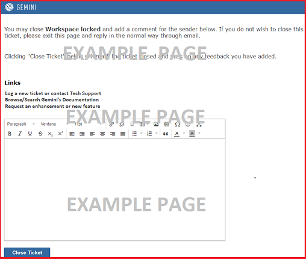

NoteThis feature is not available in verions of Gemini prior to 7.1.0

Gemini's Close Template functionality lets you define a page with a message to your customer/user and the option for the customer/user to set the status of the ticket and provide a closing remark.
On this template you define the message, provide links if you wish, define the status the customer can set (does not have to be 'Closed', it could be 'Replied' or any other), choose the Call to Action button text, and decide if the customer can provide feedback, which will be added to the ticket as commentary.
To implement this functionality, navigate to Configure Gemini...Ticketing...Close Ticket Template, and set the template up as shown below.
Note the use of @(Model.TheItem.Title) in the image above, which will inject the ticket title into the template. For more information on fields that can be included in an email template see Email Templates.
To include a link that will take your customer/user to the Close Ticket page, you need to include an HTML anchor and a reference to Model.CloseTicketUrl into your standard email templates (see image below).
The most obvious email template to put this in is "Email Reply (Breeze)", but it can be injected into any of Gemini's email templates.
There is a simple technique to allow Gemini users, using Breeze Reply, to decide on a reply-by-reply basis whether or not the Close Ticket link should be inserted.
NoteThe customer can only click the button on a ticket once. After the status has been set, the link to the page, though valid, will have no effect on the ticket.